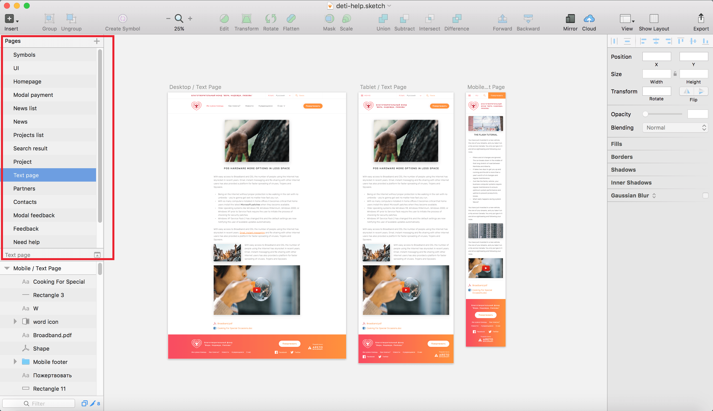
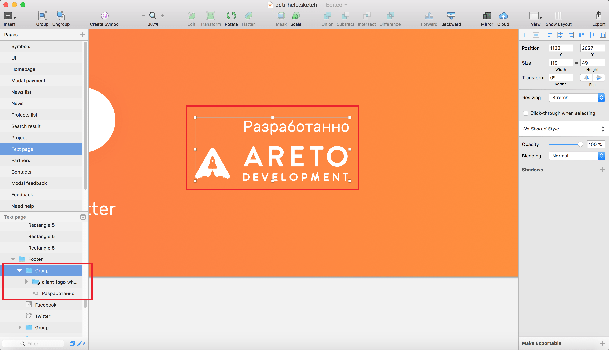
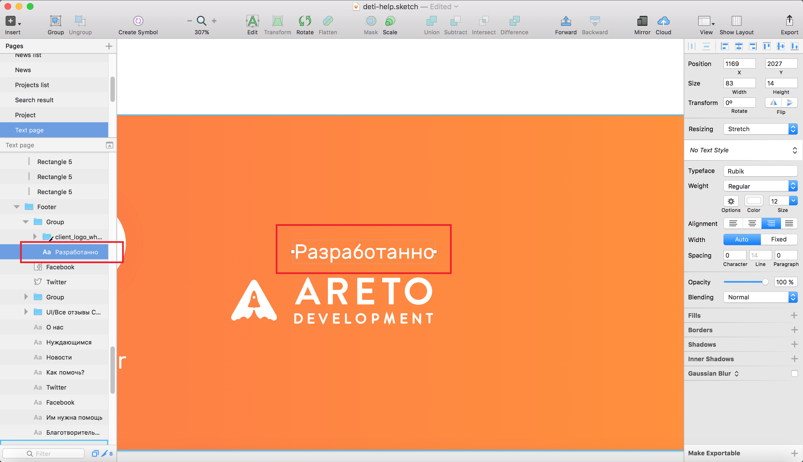
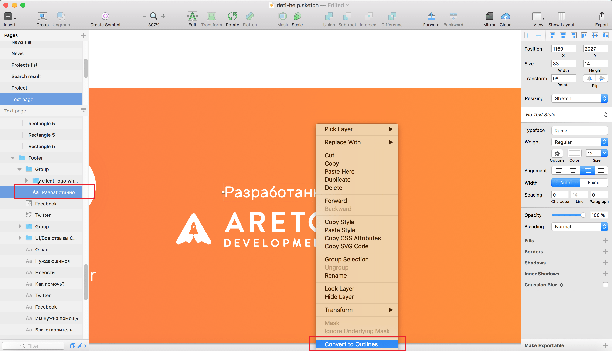

Preparing design for html
1. One sketch file for project
1.1 One sketch file for project

2. Clean layers
2.1 Clean layers
2.2 Clean layers

2.3 Clean layers

2.4 Clean layers

2.5 Clean layers
3. Grids
4. UI-KIT
5. Responsive
6. Fast communications